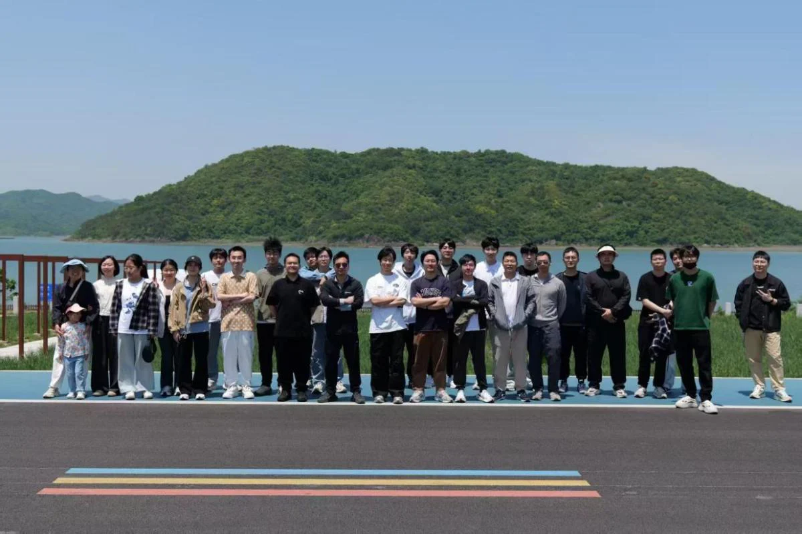
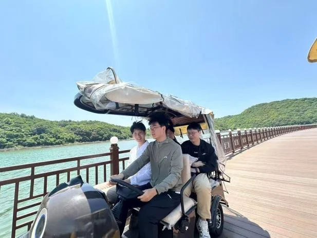
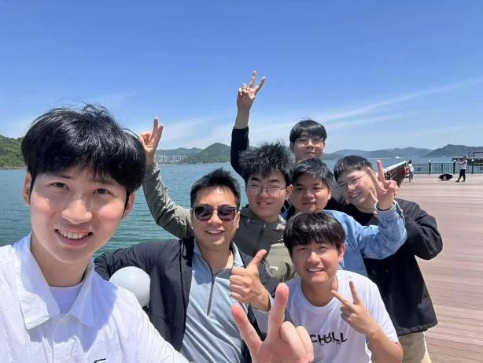
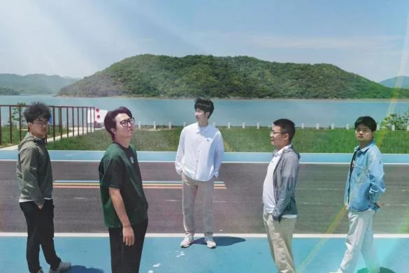
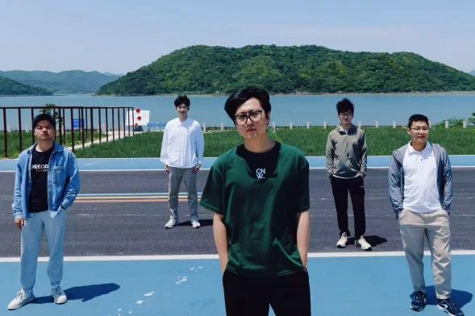
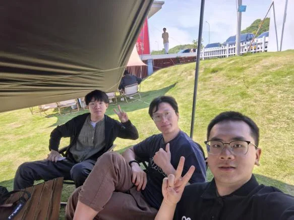
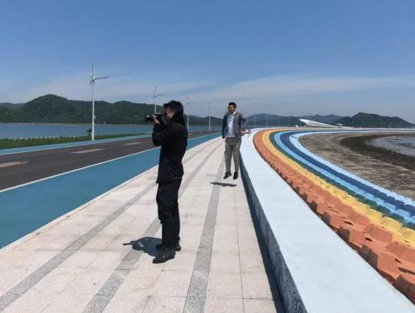
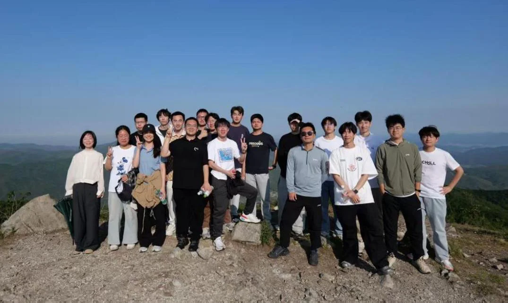
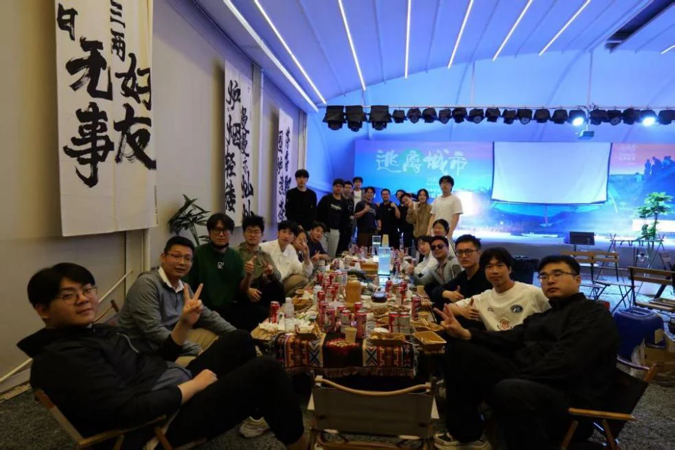

趁着春风正好，iMED团队开启了一年一度的春游。在这次郊游里，我们先后游览了天妃湖，攀登了金峨山，也在金峨谷露营基地里进行了难忘的烧烤晚宴。

｜iMED 全阵容 · 春日大片登场 : 故事开始于春天，也藏在每一帧笑里。｜
天妃湖风景如画，湛湛波光映衬着碧草蓝天，远处的山被薄雾笼罩，重重叠叠、若隐若现。大家沿十里长堤且行且摄，欣赏记录这山水美景。在观光车上，微风吹拂，远处雾气苍色如烟，吴博很合时宜地播放了一首《起风了》，享受着这美妙的郊游时光，非常安逸巴适。之后，大家高兴地开着小游览车，绕着湖边悠闲地游览起来。最后大家在堤坝上拍照留念，赵老师还亲自上阵担任导演和摄影，为iMED男团拍摄出道照片。


| iMED · 男团 · 公路旅行篇 | | iMED · 男团 · 沿途的风景 |


| iMED · 男团 : 这氛围感，青春偶像剧都拍不出来！|


| iMED · 新人报到 | | iMED · 老师：用镜头记录同行 |
经过中午的短暂休整，大家再次出发，目标是登顶金峨山。登顶之路虽然不算漫长，但沿途视野开阔，尚在山腰便可俯瞰宁波市中心的全貌，让人心旷神怡。此情此景，不禁让笔者想起一句话：“世之奇伟、瑰怪，非常之观，常在于险远，而人之所罕至焉，故非有志者不能至也。”大家精神抖擞，彼此鼓励，坚定目标，一鼓作气登上了山顶。站在山巅，清风拂面，远眺群山，顿觉心胸开阔。众人在山顶合影留念，寓意着iMEDer终将在顶刊相见。

| iMED · 高燃瞬间： 风在远方，人在山巅，我们在路上 |
傍晚，大家下山抵达了露营基地，在晚饭之前，众人一同玩起了桌游。天色渐晚，烧烤摊烟雾升腾，烧烤晚宴拉开帷幕。烧烤种类齐全，非常美味，大家觥筹交错，把酒言欢，24级入学的我们也趁此机会和师兄师姐们交流感情，跟师兄师姐们熟络了起来。饭后大家开始了营地KTV，赵老师点歌《外面的世界》祝福今年要毕业的师兄师姐，无论走出多远iMED都会由衷地祝福每位iMEDer去远空翱翔，并且等待他们的归期。晚上，大家在民宿自行玩起桌游，享受山里的静谧夜晚，在欢声笑语中结束了这个良夜。

| iMED · 夜幕下的朋友局：我们围坐一圈，聊着近事，也悄悄靠近了远方 |
春游虽已结束，但其传递的温暖与力量常驻心间。此次活动让我知道了了实验室不仅是严谨的科研阵地，更是有温度、有活力的成长家园。期待未来我们能延续这份默契与热忱，在学术探索中并肩前行，在生活征程里彼此扶持。愿每位成员在此既找到归属感与使命感，兼具攀登科研高峰的勇气与享受攀登过程的智慧。让我们以团队精神为帆，在创新突破中共进，在互助协作中成长。相信通过集体努力，实验室将成为更卓越温暖的大家庭，而我们也将在此遇见更好的自己——以青春之名，赴山海之约，共期璀璨未来。
朋友们，明年春天再见!
编辑：张羽博 、吴东涵、 王志